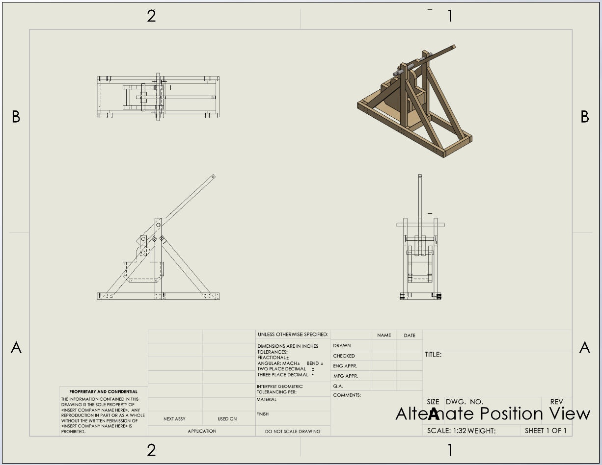

Assembly modeling
Controlled interfaces among the base, frame, throwing arm, bucket, axles, slide, and fasteners.
EML 3022 CAD project · Fall 2024
A recreational and educational mechanism developed as a complete SolidWorks assembly with fabrication drawings, an exploded view, a bill of materials, and a gravity-driven motion study.

The project translated a counterweight trebuchet concept into a documented mechanical assembly suitable for recreational use and classroom demonstrations.
The frame and bucket were specified in pine for availability and ease of fabrication. Plain carbon steel was selected for axles and fasteners to provide strength and wear resistance, while a plywood launch surface supported the projectile path.
The drawing package carried the design from full assembly through balloons, bill of materials, alternate positions, and individual part drawings.


Controlled interfaces among the base, frame, throwing arm, bucket, axles, slide, and fasteners.
Produced an exploded view, BOM, alternate-position drawing, and individual component drawings.
Balanced accessibility and function with hardware-store pine, plywood, and carbon-steel hardware.
Applied gravity to check that the rigid assembly rotated about its pivot without modeled interference.
Model what can be defended. Document what cannot.
The sling, rope, and counterweight were intentionally excluded from the digital assembly. Early attempts using 3D sketches and splines did not produce a practical, dimensionable flexible-rope model.
The useful decision was to preserve a credible rigid-body model and state its limitation—not present an incomplete flexible-element simulation as validated launch behavior.
| Evidence | Finding | Status |
|---|---|---|
| Assembly documentation | Exploded view, BOM, alternate positions, and individual part drawings were completed. | Documented |
| Rigid-body motion | The throwing arm rotated about its axle under simulated gravity without significant modeled interference. | Checked |